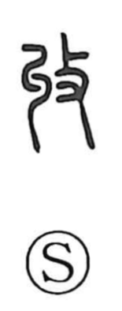

収

Kun: osameru, osamaru | On: shuu
to collect ・ to receive ・ to store ・ to harvest ・ to capture
Explanation
収, formerly 收, combines 丩 with 攴. 丩 shows strands wound and twisted together like a rope. 攴 supplies striking or beating: the twisted material is beaten tight and made firm, so that it holds together securely.
From gathering strands into a strong binding, 収 extends to bringing things together and securing them. It can mean to collect, take in, put away, or bring under control. Binding also provides the sense of capturing and taking someone into custody.
When scattered activity is gathered in, it comes to a close. 収 can therefore describe something settling, stopping, or reaching its end, as well as the active work of collecting and storing it.